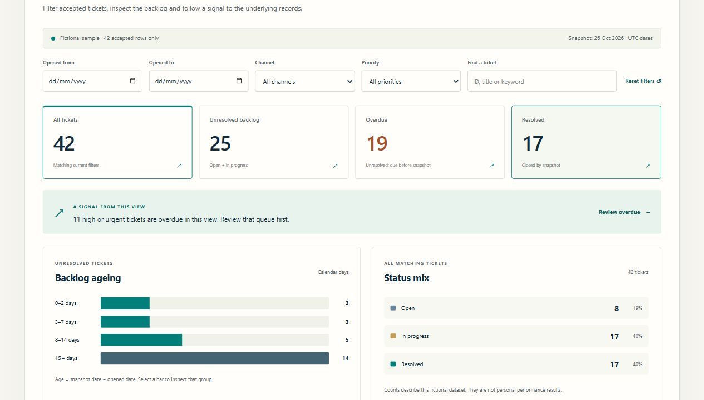

Case study 02 · Data quality & reporting
Data Workbench
Check the input. Explain the exceptions. Make the detail behind the dashboard accessible.

A visible path from input to insight
A dashboard is only useful when its inputs make sense.
A well-presented total can hide duplicate records, missing identifiers or inconsistent statuses. A summary can also make it difficult to find the individual cases that need attention.
I created this synthetic demonstration to show two connected practices: making data rules visible before a file is used, and giving a reader a clear route from service-ticket summaries to the underlying records.
Explain what the interface is doing.
Validation with a useful next step
The CSV workflow checks a nine-column service-ticket schema, including required fields, duplicate identifiers, allowed values, calendar dates, date order and non-negative whole-number effort. Every instance of a duplicate identifier is held for review. Accepted rows and exceptions can be downloaded separately, with spreadsheet formula prefixes neutralised in the export.
Summary and detail together
Date, channel, priority and text filters narrow the fictional service-ticket dataset. Backlog age and status charts lead into register detail, while a record dialog provides a closer look. Summary measures use a fixed demonstration snapshot so their time basis stays explicit.
A self-contained demonstration
Browser-side processing keeps the example lightweight and easy to inspect. There is no API, account or server-side processing in this demonstration. The sample records are synthetic, so it can be explored without exposing employer or customer information.
Try the normal path and the failure path.
Open the demonstration and compare the sample records with the validation result. Change an input, examine the explanation, and inspect how accepted rows and exceptions are separated. The parser handles quoted commas, escaped quotation marks, multiline values, a UTF-8 byte-order mark and common line endings.
In the ticket reporting view, change a filter and follow the result into the records. Check what happens when no records match, and whether the visible context makes the selected view understandable.
On 26 October 2026, all 35 automated data-logic tests passed, covering malformed and quoted CSV, duplicate handling, date boundaries, reconciliation, safe exports and reporting definitions. Browser checks covered filtering, record details, an invalid upload, a downloaded CSV, keyboard navigation and narrow-screen presentation.
These checks demonstrate the behaviour of this tool. The fictional record counts are separate from any claim of employer performance or measured time savings.
Explore the working Data WorkbenchSynthetic data. Explicit demonstration scope.
This is a personal portfolio example, separate from any employer’s reporting environment. It is not connected to a live helpdesk, a production database or a business intelligence tenant.
The browser demonstration has no organisation identity management, shared storage or production integration. Its checks illustrate a defined sample schema; different source systems require their own data definitions, validation rules and acceptance criteria.